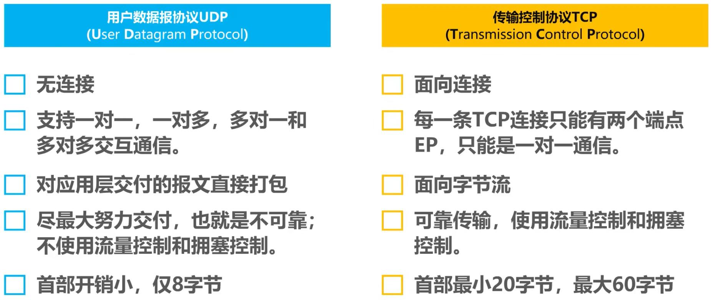
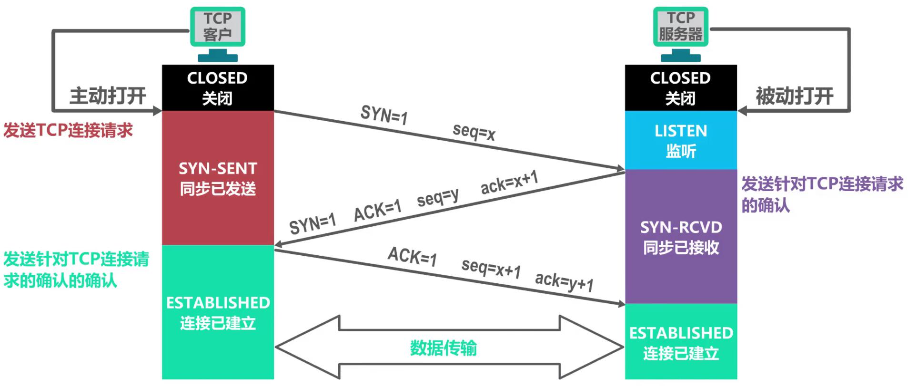
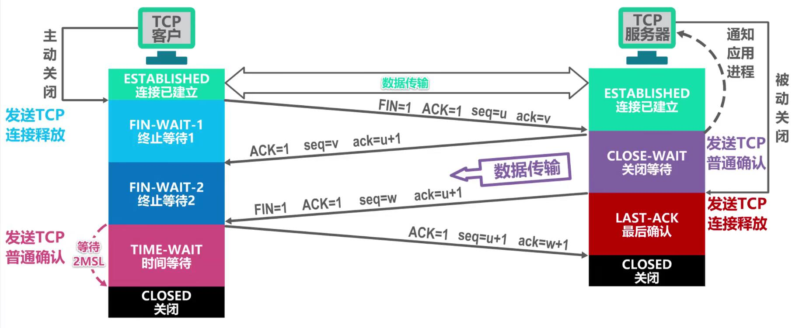
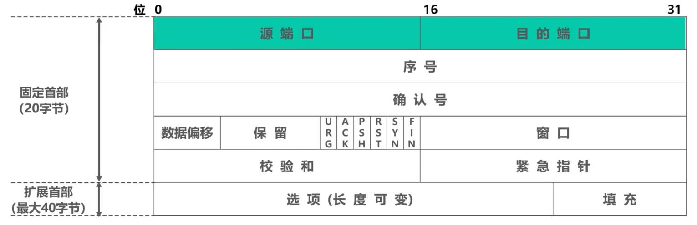

计算机网络-运输层
计算机网络中进行通信的真正实体是位于通信两端主机中的进程，如何为运行在不同主机上的应用进程提供直接的通信服务是运输层的任务（端到端）。 - 因特网的运输层为应用层提供了面向连接的TCP和无连接的UDP两种不同的运输协议； ## 一、端口号、复用和分用 端口号：TCP/IP体系的运输层使用端口号来区分应用层的不同应用进程。 - 端口号用16比特表示，分为熟知端口号、登记端口号、短暂端口号； - 端口号只具有本地意义； 复用和分用： - 发送方：UDP复用/TCP复用、IP复用； - 接收方：IP分用、UDP分用/TCP分用； ## 二、UDP和TCP的对比  ## 三、TCP的流量控制和拥塞控制 #### 流量控制 如果发送方数据发送速度过快，接收方可能来不及接收，造成数据丢失，这时需要采用流量控制。 利用滑动窗口机制可以很方便地在TCP连接上实现对发送方的流量控制： - TCP接收方利用自己接收窗口的大小来限制发送方发送窗口的大小； - TCP发送方收到接收方的零窗口通知后，启动持续计时器，持续计时器超时后发送零窗口探测报文。 #### 拥塞控制 某段时间内，若对网络中某一资源的需求超过了该资源所能提供的可用部分，网络性能就要变差，称为拥塞。 TCP采用了四种拥塞控制算法：慢开始、拥塞避免、快重传、快恢复。 - 发送方维护拥塞窗口cwnd变量：其值取决于网络的拥塞程度（当发生超时重传，则视为发生网络拥塞），并动态变化，发送方将拥塞窗口作为发送窗口swnd； - 维护一个慢开始门限ssthresh：cwnd<ssthresh使用慢开始算法，cwnd>ssthresh时改用拥塞避免算法； - 慢开始：cwnd初始值为1，发送方每收到一个确认报文段，将cwnd加1，cwnd呈指数增长； - 拥塞避免：每个传输轮次结束后，cwnd加1，cwnd呈线性增长； - 当遇到拥塞（超时重传），则ssthresh重置为当前cwnd的一半，cwnd减少为1，重新开始执行慢开始算法； - 快重传：超时重传不一定由网络拥塞导致，错误启动慢开始算法，降低传输效率。快重传要求接收方收到数据立刻发送确认（包括失序报文段），发送方一旦收到3个连续的重复确认就将相应报文段立即重传，而不用等超时重传计时器超时。 - 快恢复：发送方收到3个重复确认，不启动慢开始算法，而是将ssthresh和cwnd调整为当前cwnd的一半，并开始执行拥塞避免算法； ## 四、TCP超时重传时间的选择 超时重传时间RTO的选择是TCP最复杂的问题之一。 加权平均往返时间RTTs： - RTTs1 = RTT1； - 新的RTTs = (1-α) × 旧的RTTs + α × 新的RTT样本（指数平滑法） - 已成为建议标准的α取值为0.125； 超时重传时间RTO： - 应略大于加权平均往返时间RTTs； - RFC6298建议使用的RTO = RTTs + 4 × RTTd，RTTd1 = RTT1 ÷ 2，新的RTTd = (1-β) x 旧的RTTd + β × |RTTs - 新的RTT样本|，β建议值为0.25； - 只要报文段重传了，就不采用其往返时间RTT样本，并把RTO增大一些（如×2）； ## 五、TCP可靠传输的实现 TCP基于以字节为单位的滑动窗口来实现可靠传输。 - 确认报文段包含接收窗口大小和希望接收到的起始字段，发送方据此构建发送窗口； - 发送方在未收到接收方的确认时，可将发送窗口内还未发送的数据全部发送出去； - 接收方只接收序号落入发送窗口内的数据； - TCP通常将不按序到达的数据先临时存放在接收窗口中，等字节流缺少的字节收到后，再按序交付用户进程； - TCP要求接收方必须有累积确认和捎带确认机制，不应过分推迟发送确认； - TCP通信是全双工通信； ## 六、TCP的运输连接管理 TCP运输连接有三个阶段： - “三报文握手”建立TCP连接； - “四报文挥手”释放TCP连接； #### TCP的连接建立 TCP连接建立要解决以下三个问题： - 使TCP双方能够确知对方的存在； - 使TCP双方能够协商一些参数（如窗口最大值）； - 使TCP双方能够对运输实体资源（如缓存大小、连接表中的项目等）进行分配； “三报文握手”过程： - TCP服务器进程创建传输控制块，进入监听状态； - TCP客户进程创建传输控制块，向TCP服务进程发送TCP连接请求报文段（SYN=1，seq=x，不能携带数据且需要消耗掉一个序号），进入同步已发送状态；（一握手） - TCP服务器进程发送TCP连接请求确认报文段（SYN=1，ACK=1，seq=y，ack=x+1，不能携带数据且需要消耗掉一个序号），进入同步已接收状态；（二握手） - TCP客户进程发送一个普通的TCP确认报文段（ACK=1，seq=x+1，ack=y+1，可携带数据，若未携带数据则不消耗序号），进入连接已建立状态；（三握手） - TCP服务器进程进入连接已建立状态； - 若改为两挥手，则可能因TCP连接请求超时重传导致错误；  #### TCP的连接释放 “四报文挥手”过程： - TCP客户进程发送TCP连接释放报文段（FIN=1，ACK=1，seq=u，ack=v，不携带数据也要消耗掉一个序号），并进入终止等待1状态； - TCP服务器进程发送一个普通的TCP确认报文段（ACK=1，seq=v，ack=u+1），并进入关闭等待状态（未传输完的数据会继续传输，持续一段时间）； - TCP客户进程收到后进入终止等待2状态； - TCP服务器进程数据发送完后，发送TCP释放报文段（FIN=1，ACK=1，seq=w，ack=u+1），并进入最后确认状态； - TCP用户进程发送普通的TCP确认报文段（ACK=1,seq=u+1，ack=w+1），并进入时间等待状态; - TCP服务器进程进入关闭状态； - TCP客户进程在2MSL（MSL为最长报文段寿命，建议值为2min，一般更小）的时间后进入关闭状态； 保活计时器：TCP服务器进程每收到一次数据，就重新设置并启动保活计时器（2小时），保活计时器到时后，TCP服务器进程发送一个探测报文段，并每隔75秒发送一次。若连续10个探测报文段未被响应，则TCP服务器进程关闭连接。  ## 七、TCP报文段的首部格式  序号：指出本TCP报文段数据载荷的第一个字节的序号（循环）。 确认号：指出期望收到对方下一个TCP报文段的数据载荷的第一个字节的序号，同时也是对之前收到的所有数据的确认，只有ACK=1才有效； 数据偏移：即首部长度，指出TCP报文段的数据载荷部分的起始处距离TCP报文段起始处有多远，取值为首部字节数/4； 保留：保留今后使用，置为0； SYN：在TCP连接建立时用来同步序号； FIN：用来释放TCP连接； RST：用来复位TCP连接，RST=1时表明连接出现异常，需要释放并重新建立连接； PSH：PSH=1时，接收方会将该报文段尽快上交应用进程； 窗口：本报文段发送方的接收窗口； 校验和：检查TCP报文段（首部+数据载荷）是否出现误码； 紧急指针：URG=1时才有效，用来指明紧急数据的长度，紧急数据可插队到发送缓存的最前面； 选项：用来增加TCP功能： - 最大报文段长度MSS选项：数据载荷部分最大长度； - 窗口扩大选项：为了扩大窗口（提高吞吐率）； - 时间戳选项：用来计算RTT；用于处理序号超范围的情况，又称防止序号绕回PAWS； - 选择确认选项：实现选择确认功能；